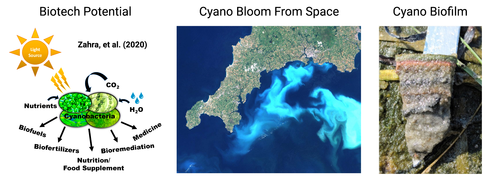
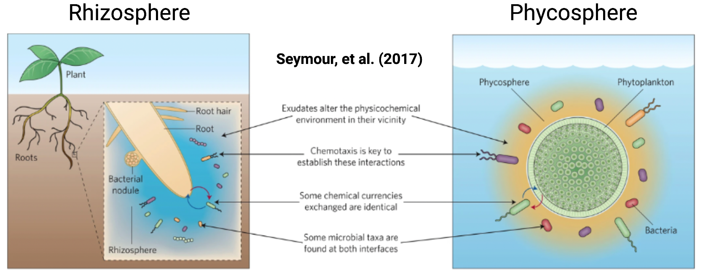
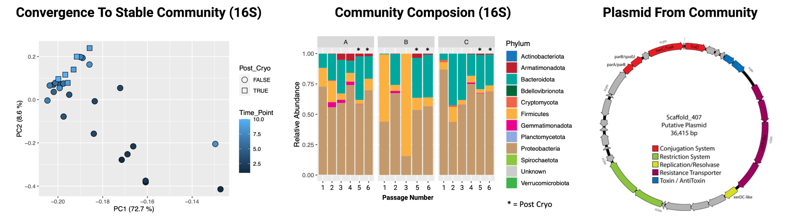

Cyanobacterial Communities
Overview
Cyanobacteria, also known as blue-green algae, are an extremely important, abundant, and widespread group of photosynthetic microorganisms found in almost every environment on our planet. They are critically important for Earth’s carbon and nitrogen cycles as they remove as much carbon dioxide (CO2) from the air as all the world’s plants, produce ~30% of our breathable oxygen, provide up to 50% of the fixed nitrogen other organisms use, and both directly produce and influence methane release from aquatic environments. Cyanobacteria have also been intensively studied for their industrial and biotechnological potential, as engineered cyanobacteria have shown the potential to produce a variety of fuels, chemicals, and medicines using only light, CO2, and micronutrients as an input. However, the impacts of cyanobacteria are not always friendly, as they are well known to produce a variety of natural products that include potent neurotoxins. Cyanobacterial blooms producing these toxins can impair the safety of limited fresh water supplies used for drinking, irrigation, fishing, and recreation. Importantly, it is predicted that climate change and anthropogenetic eutrophication will have major impacts on cyanobacteria in natural systems. Thus, it is critical that we study these incredibly impactful organisms in the context of their microbial communities to understand how they perform ecosystem functions, how they can be leveraged for biotechnology, and how they will be impacted by human driven changes globally.
Being primary producers, Cyanobacteria form the bedrock of microbial food chains in many environments, and readily form complex interactive assemblages with other environmental microorganisms. This is similar to how microbes assemble around plant roots in an area called the rhizosphere, whereas the analogous area surrounding a cyanobacterium is known as the phycosphere. Cyanobacterial communities range in structure from planktonic assemblages to highly organized biofilms in streams and desert crusts. We now know that the co-occurring organisms in these communities interact with cyanobacterial cells and exert significant impacts on their growth and physiology. However, the specific co-occurring organisms, genes, and interactions that drive the ultimate collective behavior of these communities remain little understood. More broadly, the study of these and other microbial communities is hampered by the fact that few, if any, model systems exist that enable the systematic study of the mechanisms driving the collective behavior of these communities
. Thus we are interested in the development of model cyanobacterial community systems and targeted community editing tools to interrogate the functions of these systems in the context of environmental sustainability and human health. Approach
Cyanobacterial communities are inherently excellent systems to explore and develop in vitro microbial community models. By their very nature, cyanobacteria naturally form microbial assemblages, and it is widely acknowledged in the field that obtaining axenic isolates of cyanobacteria is difficult since they strongly associate with, and are hard to separate from, microorganisms present in the source material from where they are collected. Unfortunately, while this is widely known, little to no work has been done to systematically characterize the communities present in non-axenic isolates. We hope to leverage this property, as well as other biotechnologically favorable traits of cyanobacteria including ease of growth, natural transformability, and unique metabolic traits to construct, derive, and engineer cyanobacterial communities in ways that enable us to study how the organisms, genes, and interactions in these communities drive their responses to environmental conditions and ultimately their collective behavior. Currently we use two approaches to create cyanobacterial communities
- We create semi-synthetic consortia where a single axenic cyanobacterium is inoculated with environmentally derived bacteria and passaged until a stable community forms (UniComs)
- We use single filament isolation to collect a single cyanobacterial filament with its physically associated microbes, and grow and passage the filament until a stable community forms (MatComs)
Since systematic construction of model in vitro microbial communities is still a very unexplored space, one major goal of our lab is to understand the factors that impact stable community formation as well as the compositions of the communities that can be produced using these methods. Subsequently we are interested in assessing the impact of nutrient concentrations, stress, and the behavior of cyanobacteria engineered to produce biotechnologically useful products in the context of whole communities. The methods we use for interrogation of these communities include: microscopy, biochemical and physiological measurements, genome resolved metagenomic sequencing, and transcriptomics. We are also focusing on developing targeted genetic tools to enable direct genetic modification of these communities (Community Editing) by identifying and harvesting natural genetic elements within these systems that may enable DNA mobilization and delivery.
